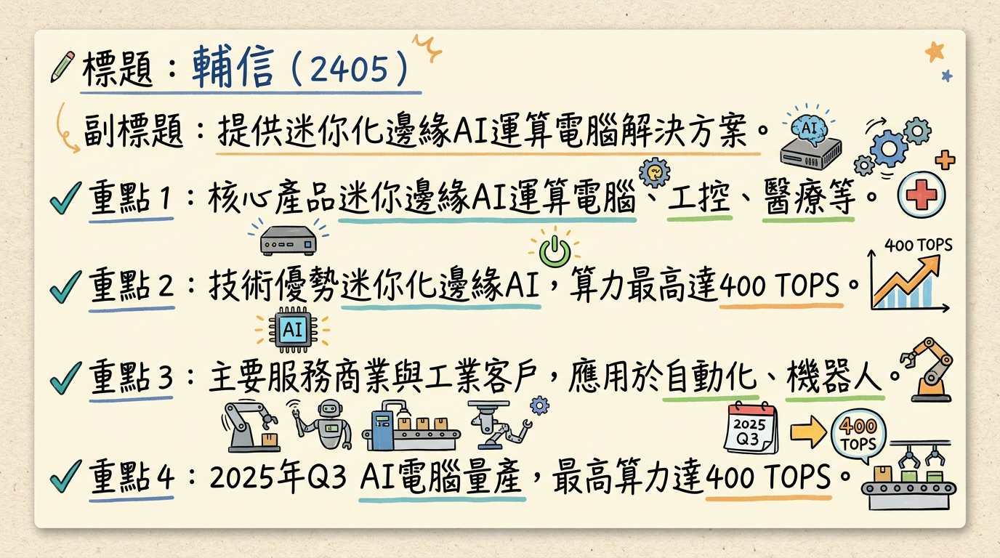
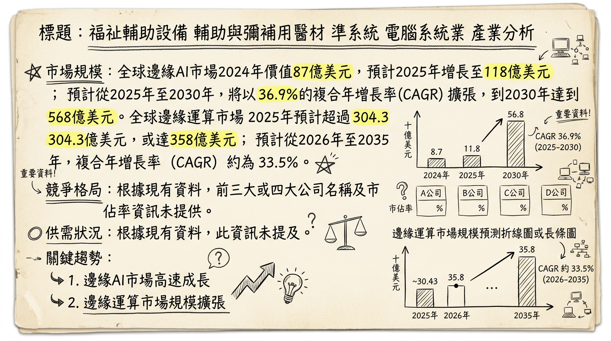
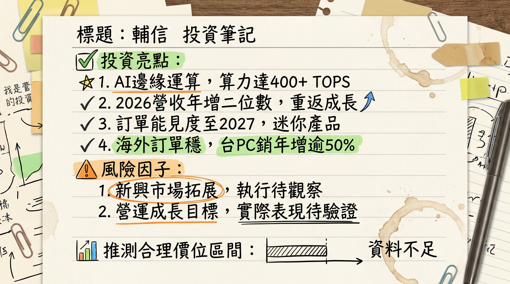

輔信 (2405) 已成功轉型為迷你化邊緣AI運算解決方案供應商，受惠於全球邊緣AI應用加速落地、產業數位轉型與Windows 10換機潮，2026年營運展望樂觀，管理層預期營收將實現雙位數成長。公司聚焦智慧零售、視訊監控、機器視覺與智慧城市等高潛力應用領域，並透過多元晶片平台與小型化產品策略，有望在快速成長的邊緣AI市場中佔據一席之地。
輔信科技 (2405) 前身為準系統廠商浩鑫電腦，於2020年更名後，業務重心已轉向迷你化邊緣AI運算電腦解決方案。其核心業務為開發與製造適用於商業與工業領域的智慧解決方案。
核心產品與服務：| 地區 | 營收金額 (新台幣) | 佔比 (%) |
|---|---|---|
| 歐洲 | 8.01 億元 | 48.06 |
| 美國 | 5.59 億元 | 33.54 |
| 亞洲 | 1.80 億元 | 10.79 |
| 台灣 | 6,393.40 萬元 | 3.84 |
| 其他 | 5,694.10 萬元 | 3.42 |
| 中國 | 608.60 萬元 | 0.37 |
| 合計 | 16.67 億元 | 100 |
| 月份 | 金額 (新台幣) | 月增率 MoM (%) | 年增率 YoY (%) |
|---|---|---|---|
| 2026年01月 | 1.35 億元 | -1.46 | 14.47 |
| 2025年12月 | 1.37 億元 | -20.61 | 10.62 |
| 2025年11月 | 1.73 億元 | 18.93 | 28.74 |
| 2025年10月 | 1.46 億元 | -8.73 | 3.75 |
| 2025年09月 | 1.60 億元 | 5.51 | 26.45 |
| 2025年08月 | 1.51 億元 | 11.59 | 22.62 |
* 毛利率、營業利益率、EPS 等詳細數據未公開，預計將於後續財報揭露。
* EPS：0.00 元。
* 累計EPS (Q1-Q3)：-0.15 元。
* 毛利率：38.26% (鉅亨網資料)。
* 營業利益率：-3.61% (鉅亨網資料)。
年度趨勢：* 日本市場： 互動式終端服務機 (Kiosk) 與視訊監控專案交付穩定，藥妝通路應用專案持續出貨，既有監控應用客戶進行產品平台升級，新年度訂單逐步導入新機種。
* 歐洲市場： 儘管受記憶體及部分關鍵零組件價格波動影響，客戶拉貨節奏轉趨保守，但公司持續與客戶協調專案時程與交付規劃。
* 亞洲市場： 台灣工業電腦銷售額年增逾50%，印度與澳洲市場同樣升溫。
目前未找到2025-2026年間有具體券商針對輔信 (2405) 發布目標價或EPS預估的報告。
| 券商名稱 | 目標價 (新台幣) | 評等 | 日期 |
|---|---|---|---|
| N/A | N/A | N/A | N/A |
| 季度 | 毛利率 (%) | 營業利益率 (%) | 稅後淨利率 (%) |
|---|---|---|---|
| 2024 Q1 | 40.72 | -1.15 | 5.17 |
| 2024 Q2 | 41.73 | -2.89 | 0.35 |
| 2024 Q3 | 39.86 | -4.15 | -2.42 |
| 2024 Q4 | 41.87 | -4.07 | -1.23 |
| 2025 Q1 | 40.54 | -3.12 | 1.15 |
| 2025 Q2 | 41.11 | -4.42 | -14.96 |
| 2025 Q3 | 38.26 | -3.61 | -0.28 |
輔信的毛利率在40%左右震盪，顯示產品具有一定的競爭力。然而，營業利益率和稅後淨利率在2024年和2025年多數季度呈現負值，主要受外部因素影響，包括美國關稅、美元匯率波動及歐洲經濟復甦緩慢。2025年Q2受業外損失影響，稅後淨利率大幅下降。公司管理層預期隨著邊緣AI PC新產品佈局完成，2026年第二季後營運能見度將逐步明朗，若新產品能順利放量，將有助於優化產品組合並提升獲利表現。
存貨分析：輔信為因應記憶體及部分關鍵零組件價格波動，已採取策略性備貨措施，並透過多元供應商體系維持規格選項的彈性。這顯示公司採取預防性備料以確保供應鏈穩定，而非異常堆積。
備註：近4季存貨金額與存貨週轉天數趨勢、應收帳款週轉天數趨勢，目前未找到2024-2026年具體數據。* 資本支出：輔信已新建總部大樓，預計於2026年投入使用，此為擴大營運規模及優化工作環境的資本支出計畫。公司也將持續擴大工業電腦客戶基礎，並利用各地子公司的在地化組裝、測試與客製化能力，爭取更多專案型合作機會。
備註：近3年資本支出金額與趨勢、預計新增產能、折舊攤銷趨勢，目前未找到2024-2026年具體數據。** 除息日：2025年07月03日。
* 現金股利發放日：2025年07月23日。
* 以2025年7月1日收盤價15.85元計算，現金股利殖利率為1.07%。
* 近五年平均現金股利為0.11元，平均現金殖利率為0.62%。
邊緣AI運算市場正處於高速成長階段，主要動力來自物聯網(IoT)設備、自駕車與智慧基礎設施對即時數據處理的需求，以及5G網路的普及。
* 2026年預計達到396億美元。
* 2026年至2035年CAGR約為33.5%；另有預測2026年至2032年CAGR為24.43%。
* 2025年至2030年預計以36.9% CAGR擴張，到2030年將達到568億美元。
* ABI Research報告指出，2025年邊緣AI晶片組市場規模將達到122億美元，首次超過雲端AI晶片組市場規模。
* 2025年至2032年CAGR為17.4%，預計到2032年達到271億美元。
* 並將於2030年增至1062.5億美元，年複合成長率達13.48%。
供需狀況： 目前邊緣AI運算產業呈現需求旺盛、供不應求的態勢，驅動產業持續投資與發展。MIC指出，由於產業AI運算需求旺盛，將帶動邊緣AI硬體滲透率成長至接近2成。 產業平均毛利率水準： 目前未找到2024年以後邊緣AI運算產業或工業電腦產業的平均毛利率水準具體數據。邊緣AI運算和工業電腦領域競爭激烈且分散，主要參與者包括晶片大廠、傳統IPC業者和雲服務提供商。
主要競爭對手比較：| 公司名稱 | 相關領域及影響力 | 輔信 (2405) 優勢/差異點 |
|---|---|---|
| NVIDIA (輝達) | 邊緣AI晶片、模組（如Jetson系列），提供強大AI推論算力，主導AI半導體市場。 | 輔信是其重要的應用夥伴，專注於提供小型化、整合性的邊緣AI電腦解決方案，而非晶片本身。 |
| Intel (英特爾) | 推出Gaudi 3 Edge AI處理器，在邊緣AI晶片組市場中佔重要地位，提供OpenVINO等軟體平台。 | 輔信亦是Intel平台的合作夥伴，並在迷你化準系統設計、特定垂直市場應用上形成差異。 |
| Qualcomm (高通) | Edge AI 100加速器晶片系列，專注於超低功耗NPU，實現物聯網和穿戴式裝置即時推論。 | 輔信可將高通的低功耗晶片整合至其超小型化產品中，擴展物聯網節點應用。 |
| 研華 (Advantech) | 工業電腦(IPC)領域全球領導廠商，也推出中高階算力AI Box產品，客戶群廣泛。 | 輔信的差異化在於其「迷你化」和「準系統」解決方案，更專注於機器人視覺、醫療及利基邊緣AI等特定應用，提供彈性客製方案。 |
| Amazon Web Services (AWS) | 提供雲端服務與IoT解決方案，利用AWS IoT在邊緣部署AI。 | 輔信提供地端邊緣硬體解決方案，可與雲端服務商的平台整合，作為其生態系中的硬體供應商。 |
| Microsoft (微軟) | 透過Azure AI提供AI解決方案，部署和管理跨邊緣裝置的模型。 | 同AWS，輔信作為其地端邊緣硬體供應商，協助將AI模型高效運行於實體邊緣設備。 |
| 輔信 (2405) | 迷你化邊緣AI運算電腦解決方案供應商，產品支援Intel、AMD、NVIDIA三大平台，從0.45L到規劃0.25L超小型PC，高階工作站算力最高400 TOPS。專注智慧零售、機器視覺、醫療等垂直市場。 | 優勢： 獨特的迷你化設計能力、多平台整合彈性、深耕利基垂直市場的解決方案經驗、全球在地化服務能力。 劣勢： 相較於大型業者，品牌知名度、規模經濟、研發資源投入可能較小。 |
* 趨勢： 邊緣AI晶片算力持續增強，且AI模型壓縮與量化運算技術進步，使小型模型能在有限資源的邊緣設備上高效運行。
* 影響： 邊緣裝置具備更強大的本地AI推論能力，大幅降低對雲端運算的依賴，減少延遲與頻寬成本。這加速了智慧工廠、智慧醫療等領域的AI落地，提升即時決策力與數據安全。
* 對輔信影響： 機會 - 輔信可整合最新高效能、低功耗邊緣AI晶片，持續提升其迷你化產品的算力與能效，鞏固技術領先地位，滿足市場對高性能邊緣AI的需求。
* 趨勢： 全球5G網路持續推廣，IoT設備數量爆發性增長，為邊緣運算提供高速、低延遲的連接基礎和海量數據來源。
* 影響： 5G與IoT的融合促使更多數據在邊緣產生並被即時處理，推動製造業、醫療保健、零售等行業對邊緣AI解決方案的強勁需求。
* 對輔信影響： 機會 - 輔信的邊緣運算解決方案是IoT/IIoT實現智能化的核心組件，能直接受惠於5G和IoT的廣泛部署，擴大其產品應用範圍和市場滲透率。
* 趨勢： Windows 10將逐步終止支援，加上AI晶片普遍整合NPU，預期將帶動企業與個人用戶對AI PC的換機需求。
* 影響： AI PC市場將迎來爆發性成長，帶動邊緣運算相關硬體需求。
* 對輔信影響： 機會 - 儘管輔信不主攻消費級AI PC，但在商用/工業級AI PC或特定邊緣工作站領域，其迷你化、高效能、多平台支援的產品線有望抓住企業換機潮中的利基市場需求。
相關投資題材連結：| 日期 | 外資買賣超 (張) | 投信買賣超 (張) | 自營商買賣超 (張) | 總計買賣超 (張) |
|---|---|---|---|---|
| 2026年03月04日 | -278 | 0 | 0 | -278 |
| 2026年03月03日 | -607 | 0 | 0 | -607 |
| 2026年02月26日 | -180 | 0 | -7 | -187 |
| 2026年02月25日 | -41 | 0 | 0 | -41 |
| 2026年02月24日 | -217 | 0 | 1 | -216 |
| 2026年02月23日 | 685 | 0 | 0 | 685 |
| 2026年02月11日 | -12 | 0 | 2 | -10 |
| 2026年02月10日 | 341 | 0 | 3 | 344 |
| 2026年02月09日 | 13 | 0 | -35 | -22 |
| 2026年02月06日 | -828 | 0 | 0 | -828 |
| 2026年02月05日 | 103 | 0 | 32 | 135 |
| 2026年02月04日 | 101 | 0 | 2 | 103 |
| 2026年02月03日 | -68 | 0 | 3 | -65 |
* 美國企業資料管理與備援應用專案、日本Kiosk與藥妝通路專案訂單啟動出貨，並延續至2026年第三季。
* 新年度產品開發： 預計第二季啟動新年度產品開發規劃，提前因應主要晶片平台世代更新節奏。
* 產品小型化推進： 持續因應客戶需求打造下一代0.25公升迷你邊緣PC產品。
* 垂直應用深化： 持續聚焦智慧零售、視訊監控、機器視覺與智慧城市等領域，深化軟硬整合能力。
* 新市場拓展： 公司計劃將更多資源投入東南亞與新興市場，看好無人化與智慧場域帶起的AI與邊緣運算需求。
* 訂單能見度： 部分客戶專案訂單能見度已看到2027年。
本報告由 AI 自動產生，資料來源為公開網路資訊，僅供參考，不構成投資建議。產生時間：2026-03-06 13:02


